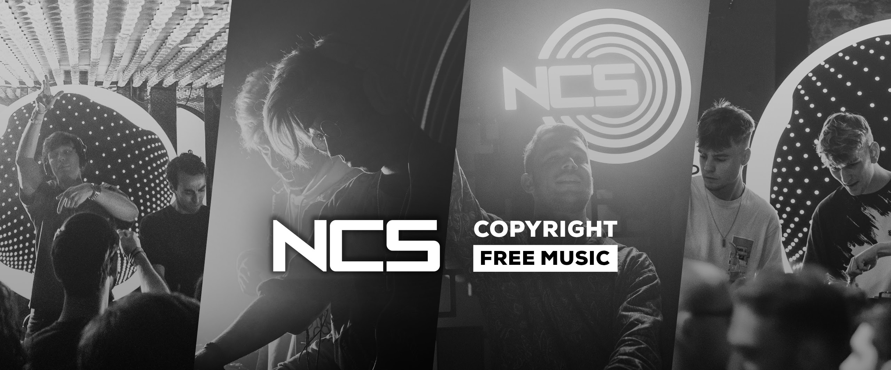

| NoCopyrightSounds | ||
|---|---|---|
| Name | Musician | Views |
| Track 1 | Musician 1 | 999+ |
| Track 2 | Musician 2 | 999+ |
| Track 3 | Musician 3 | 999+ |
Track: Sean Pitaro - Nervous [NCS Release]
Music provided by NoCopyrightSounds.
Watch more NCS on YouTube: https://NCS.lnk.to/YouTubeAT
Free Download / Stream: http://ncs.io/
[Intro]
Yeah, yeah
Let's go
[Verse 1]
You know how nervous I get when I'm around you
I, I want you to make a move
I'm like your childhood pet, I'm scared when you go
[Pre-Chorus]
And I don't wanna lose you
And there's nothing you could do
It feels warmer when you're here
I get shivers when you have to go
[Chorus]
And I can meet you on the west side
She said that she won't roll with me
I told her let's ride
Now tell me girl what do you fantasize about
All I wanna be is the top price
[Drop]
Top price
Oh my god
Top price
[Verse 2]
(Yeah)
I started of on my own
Ever since you came around I've had like nowhere to go
Let's go
I'm feeling so much worse, it's only the first of the month, yeah-yeah
I knew that I'd be insecure, I didn't think it hurt this much
[Pre-Chorus]
Like I don't wanna lose what we got
There's nothing you could do to piss me of
And I might make a fool of myself
So tell me what to do, 'cause I can't tell, ohh
[Chorus]
And I can meet you on the west side
She said that she won't roll with me
I told her let's ride
Now tell me girl what do you fantasize about
All I wanna be is the top price
[Drop]
Top price
Oh my god
Top price
(You know how nervous I get when I'm around you)
Top price
(I, I want you to make a move)
Oh my god
(I'm like your childhood pet, I'm scared when you go)
Top price